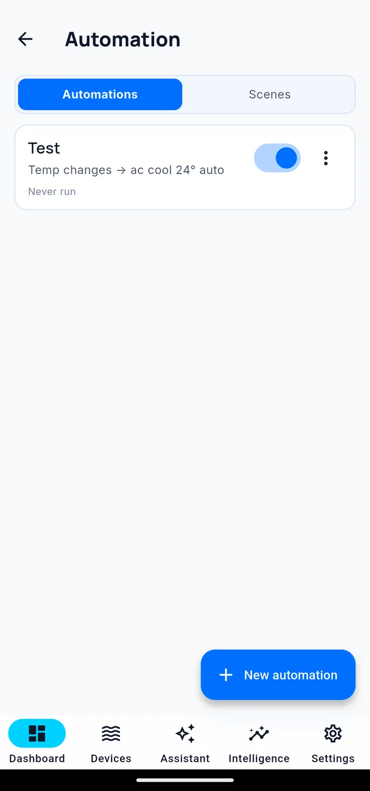

Automations and scenes
An automation is a rule Cora runs for you: when this happens, check that, then do this. Scenes group several actions into one thing you can run or schedule.
Settings → Automation.

The screen has two tabs — Automations and Scenes — and a New automation button. Each rule shows a one-line summary of what it does, an enable switch, and a menu for editing or deleting it. A rule that has not run yet is marked as such.
The shape of a rule
Every rule is the same three parts:
Trigger — what wakes it up Conditions — what must also be true Actions — what it then does, in order
What can wake a rule
Four things:
| Trigger | Fires when |
|---|---|
| Metric | A parameter crosses a value you set, in a direction you choose |
| Alert | An alert is raised, cleared, or either |
| Schedule | A time of day, in your own timezone |
| Device status | A device goes offline or comes back |
Conditions
Conditions decide whether the actions actually run. You get the usual comparisons — equals, not equals, greater than, less than, and so on — and you can combine them with and, or and not.
There is also a step condition, which checks how the previous step turned out. That is what lets you write "try this; if it did not work, do that instead."
What a rule can do
Twelve kinds of action:
| Action | What it does |
|---|---|
| Control Apex Equipment | Switch an outlet |
| Control a Red Sea Equipment | Drive a ReefBeat unit |
| Control a wavemaker | Change pump mode or intensity |
| Control a Cora Equipment | Switch a smart plug |
| Control IR Device | Send an infrared command |
| Run Apex Feed Cycle | Start a feed |
| Run a Trident Test | Trigger a test |
| Notify Me | Send yourself a push |
| Wait Before Next Step | Pause before continuing |
| Run a Scene | Run another scene from inside this rule |
| Manage an Automation | Turn another rule on or off |
| Dose | Run a measured dose on a dosing head |
Scenes
A scene is a named group of actions you can run on demand, from a schedule, or from inside another rule — "Water change", "Photo mode", "Night".
A scene may call another scene. Cora refuses to run a scene nested beyond its depth limit, and refuses a scene that would call itself, to prevent a loop that would continue acting on the tank indefinitely.
After a scene runs you are told what happened, step by step, including anything that failed.
Turning a rule off
Every rule has an enable switch. Turning one off keeps its definition — useful when you want a rule back next season rather than rebuilding it.
Seeing what a rule did
Every action a rule takes is recorded with the rule as its cause. See Activity.
Written for Cora Max 0.28.37 and Cora Mobile 0.5.55.
Still stuck? Email cora@coraiq.tech and we'll help.